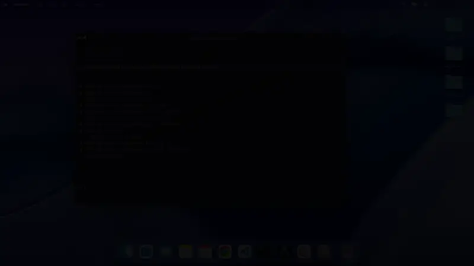
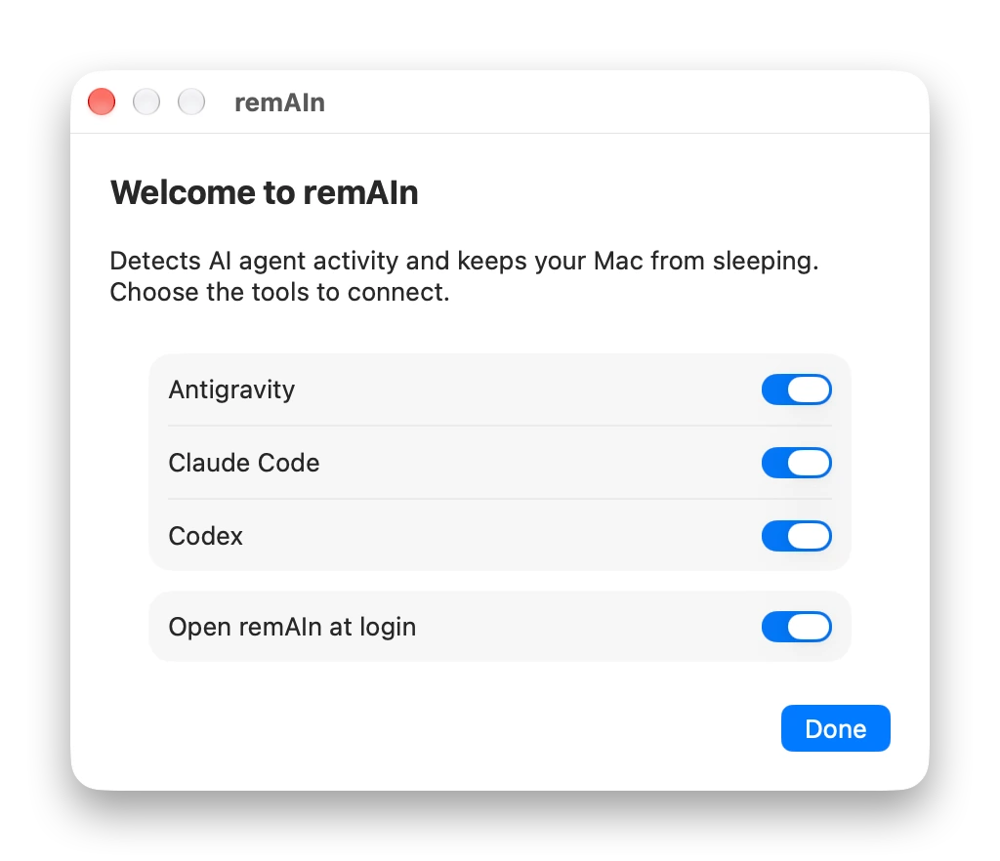
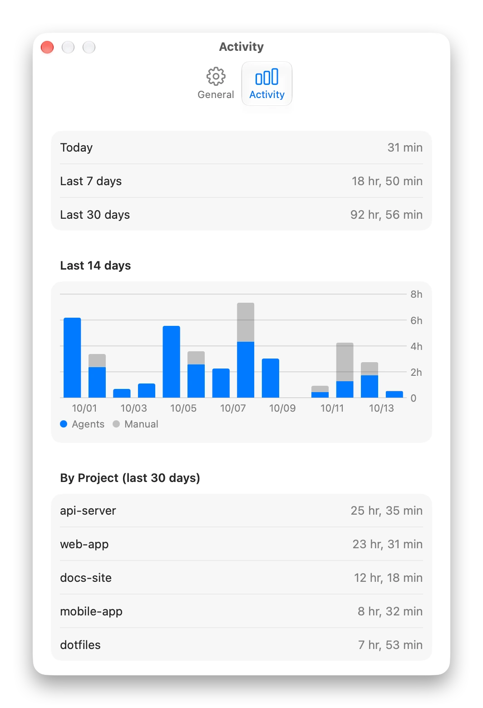

Just remAIAIn awake.
Your Mac stays awake while AI agents work, and sleeps as usual when they are done.
Free and open source · macOS 14 or later
Long AI tasks and Mac sleep don’t get along.
Three things that go wrong.
Your Mac dozes off mid-task
You hand an agent a long job and walk away. When you come back, it stopped halfway.
Easy to forget to switch off
Tricks like caffeinate need you to start and stop them. Forget, and the Mac runs all night until the battery is flat.
Not every agent lives in a terminal
Agents inside editors and desktop apps don’t run as a command, so tricks like caffeinate can’t reach them.
Awake only while they work.
remAIn watches the agent, not the clock, and lets go the moment it is done.

It watches the agent
remAIn knows when an agent starts, is working, is waiting for you, and is done. Your Mac stays awake for exactly that long.
The menu bar icon shows the state at a glance: a sparkle while an agent works, a moon when your Mac is free to sleep.
Any agent. All at once.
Works with Antigravity, Claude Code and Codex, and with any command you run through remAIn. Run several at once: your Mac sleeps after the last one finishes.
Close the lid. It keeps going.
Turn on lid-closed mode and your agent keeps working while the MacBook is shut. Handy in a bag, on a tethered connection.
It stops by itself if the Mac gets hot, the battery runs low, or your time limit is reached. Off until you turn it on.
Stopped halfway? It notices.
If an agent crashes or you close its window, remAIn lets your Mac sleep again. When a long run ends unexpectedly, you get a notification.
Quiet, and thoughtful.
Small things that keep it out of your way.
Safe in a bag
On low battery, Low Power Mode or high heat, your Mac is allowed to sleep, and remAIn tells you why. It carries on by itself once things settle.
Know when it’s done
Get a notification when a task finishes or an agent needs you. You can also have the screen turn off, or the Mac sleep, afterwards.
See where the time went
How long your Mac was kept awake, by day and by project. Kept on your Mac only, and deleted after 90 days.
Set up in a click
A welcome screen finds your agents and connects them. That’s the whole setup.
Private
No account, no tracking, no internet connection. Everything stays on your Mac.
Easy to remove
One button puts everything back the way it was. Available in English and Japanese.
See it in action.
Two minutes, start to finish.
Works with the agents you already use.
Connect them in one click, and remAIn follows them wherever you run them.

Start any command with remain run and your Mac stays awake while it runs. Builds, downloads, anything.
$ remain run -- npm run build
Nothing leaves your Mac.
No accounts, no tracking, and no connection to the internet. remAIn only remembers which project folders it kept your Mac awake for, and forgets after 90 days.
NotificationsOptional. Tells you when a task is done.Open at loginOptional. Keeps remAIn ready.Your passwordOnly if you turn on lid-closed mode.The internetNever used.
Install in a minute.
macOS 14 or later, Apple silicon and Intel.
Download
Get the zip from Releases, unzip it, and move remAIn to Applications.
Allow it once
remAIn isn’t signed by Apple, so macOS shows a warning the first time. Open System Settings → Privacy & Security and choose Open Anyway.
Connect your agents
The welcome screen finds your agents. Pick the ones you want, then work as usual.
remAIn is a free app made by one person, which is why it isn’t signed by Apple. The source code is on GitHub.
Questions
Does it need the internet?
No. remAIn never connects to the internet, and there is no account or tracking.
What if an agent crashes, or I close its window?
remAIn notices and lets your Mac sleep again. After a long run, it sends a notification. If you stop an agent yourself, it stays quiet.
How is this different from caffeinate?
caffeinate is a tool you start and stop yourself. remAIn watches your agents, keeps your Mac awake by itself, and lets go by itself. It also works with agents inside editors and desktop apps.
Could it drain the battery in a bag?
When the battery is low, in Low Power Mode, or when the Mac gets hot, remAIn lets it sleep. Lid-closed mode is off by default and has a time limit.
Why does macOS warn me about the app?
remAIn isn’t signed by Apple. Allow it once in System Settings → Privacy & Security, and it won’t ask again.